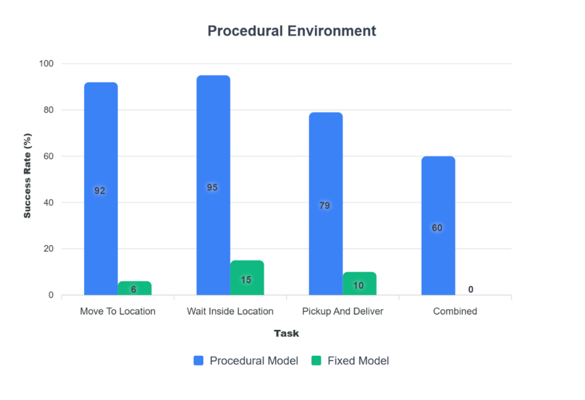

For my final year dissertation project I investigated whether training reinforcement learning agents in procedurally generated environments improves their ability to generalise to unseen layouts.
Using Unity ML-Agents, I developed a procedural maze generation system and trained multiple AI agents to complete navigation and objective-based tasks. The project compared agents trained in fixed environments against agents trained across randomly generated environments to evaluate the impact on adaptability and decision making.
This was an entirely individual project. I was responsible for the research, technical design, implementation, training, testing and evaluation of all systems.
The project utilised Unity ML-Agents and reinforcement learning. Agents observed their environment through raycast sensors and received rewards for progressing towards objectives while being penalised for inefficient behaviour.
A procedural generation system created unique maze layouts for each training episode. This prevented the agent from memorising specific paths and instead encouraged learning navigation strategies that could generalise to unseen environments.
Multiple reward structures were tested throughout development to encourage exploration, objective completion and efficient movement. Significant iteration was required to avoid reward exploitation and ensure desirable behaviour emerged during training.

The results demonstrated a substantial improvement in adaptability when agents were trained within procedurally generated environments. When evaluated across unseen layouts, the procedural model achieved significantly higher success rates than agents trained exclusively in fixed environments.
These findings support the hypothesis that procedural training improves generalisation and produces agents that are more capable of adapting to unpredictable scenarios.